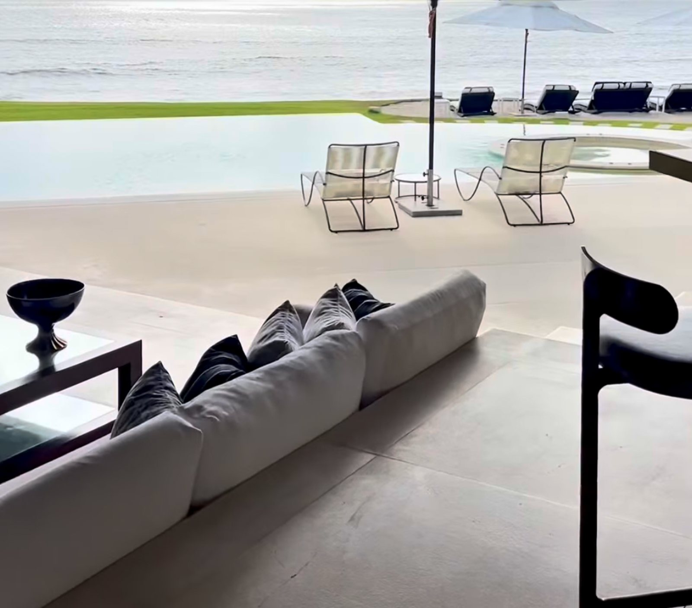

Hay inversiones que se miden en rendimientos. Esta se mide en momentos.
Ayudo a familias a comprar su segunda casa en esta costa. Residencias frente al mar y branded residences en Punta Mita y Playa Destiladeras — proyectos de colección privada, caminados uno por uno antes de llegar a ti.
¿Para qué comprar una casa en Punta Mita?
Para despertar frente al mar, jugar golf, vivir descalzo y crear recuerdos con tu familia que ningún rendimiento financiero puede reemplazar. Porque una buena inversión aumenta tu patrimonio — pero una gran inversión también mejora tu vida.

Despertar frente al mar
Playa Destiladeras: arena suave, mar abierto, atardeceres espectaculares y kilómetros para caminar frente al océano.
Jugar golf
Dos campos Jack Nicklaus Signature dentro de la península de Punta Mita, y El Tigre a unos minutos en Nuevo Vallarta.
Vivir descalzo
Ese lujo que no se compra con metros cuadrados: bajar de la terraza a la arena sin ponerte zapatos.
Crear recuerdos
Hay lugares que simplemente se visitan. Y hay lugares que terminan formando parte de la historia de tu familia.
La casa correcta no se elige solo con metros y precio
Biofilia es la tendencia natural del ser humano a buscar contacto con la naturaleza. No es una palabra de folleto: es la razón por la que duermes distinto con el mar de fondo, por la que una terraza abierta a la selva te baja el ritmo, y por la que dos departamentos con la misma ficha técnica se sienten completamente distintos.
Estas cuatro cosas no aparecen en ninguna ficha. Son las que se revisan en persona, antes de que tomes un avión.
La orientación y la luz
A qué hora entra el sol a la recámara y a qué hora pega de lleno en la terraza. Define el uso real de la casa mucho más que cualquier acabado.
El sonido
Mar abierto, alberca, calle o el generador del edificio de junto. Se oye distinto a las siete de la mañana que en la visita de mediodía.
La vegetación que ya existe
Un árbol maduro no se compra: tarda veinte años. Los proyectos que decidieron conservarlos se sienten distintos desde el primer día.
La ventilación cruzada
Determina si vas a vivir con las puertas abiertas o con el aire acondicionado encendido — y con el recibo de luz que eso implica.
Naya y Nayama, sobre la que muchos llaman la mejor playa de la Riviera
Arena suave, mar abierto, atardeceres espectaculares y kilómetros para caminar frente al océano. Dos proyectos frente al mar de One Development — el mismo grupo detrás de Arboleda en San Pedro Garza García — que suman solo 11 residencias y 17 departamentos.
Entrega inmediata o preventa. Dos formas distintas de llegar al mismo objetivo: despertar frente al Pacífico.
Un ancla que no se mueve
Four Seasons abrió en Punta Mita en 1999 y St. Regis en 2008, dentro de la misma península privada. Dos resorts de ese nivel sostienen el valor de todo lo que está alrededor.
Frente de mar que no se puede fabricar
Destiladeras y la península de Punta Mita están delimitadas por el océano. El inventario con frente de mar real es finito, y proyectos como Naya y Nayama son de once y diecisiete unidades.
Un aeropuerto internacional a 45 minutos
Puerto Vallarta conecta directo con decenas de ciudades de Estados Unidos, Canadá y México. Por eso venir un fin de semana largo es realista y no una expedición.
Branded residences, no solo metros
Naya y Nayama las desarrolla One Development, el mismo grupo detrás de Arboleda en San Pedro Garza García. La firma del desarrollador es parte de lo que estás comprando.
Lo que está sobre la mesa ahora
Esta es la parte pública. Disponibilidad, plantas por unidad, precio vigente y esquemas de pago se comparten uno a uno, dentro de la Colección Privada.
Seis zonas, seis decisiones completamente distintas
Aquí todo se vende como “Punta Mita”. No es lo mismo comprar dentro de las casetas que en Destiladeras o en El Tigre, y la diferencia no es solo el precio.
Cuatro cosas que se revisan antes de que se mueva tu dinero
Comprar frente al mar en México sale bien cuando alguien hizo estas cuatro revisiones a tiempo. Sale mal, casi siempre, cuando nadie las hizo.
Leer la guía de compraEl régimen de propiedad, antes del anticipo
En Nayarit todavía se ofrece tierra ejidal como si fuera propiedad privada. Lo primero que se verifica en cualquier propiedad es que sea escriturable a tu nombre.
El costo real de cerrar, por escrito
Notario, impuesto de adquisición, permiso de la SRE, fideicomiso, avalúo y registro suman entre 5% y 8% sobre el precio. Recibes el desglose antes de comprometerte.
Lo que se puede construir al lado
Una vista al mar vale lo que valga el uso de suelo del terreno vecino. Se revisa antes, no después de la escritura.
Comparables reales de la zona
Qué se ha vendido cerca, a cuánto y en cuánto tiempo. Es la única forma de saber si el precio de lista tiene sentido.
Cuatro pasos. En ninguno hay presión.
Me escribes
Por WhatsApp o con las ocho preguntas de aquí abajo. Lo que necesito saber es para qué la quieres, cuándo y en qué rango te mueves.
Recibes la Colección Privada
La selección que encaja con lo que pediste, incluyendo lo que no está publicado en ningún lado. Con planos, esquemas de pago y disponibilidad real.
Vienes a verlas
Un día en la zona: las residencias, la playa, el acceso, los vecinos. Punta Mita, Destiladeras y Nuevo Vallarta están a menos de una hora entre sí.
Cerramos juntos
Oferta, notario, fideicomiso, avalúo y escrituras. Y después la parte que casi nadie acompaña: administración, mantenimiento y renta si la quieres poner a trabajar.
Solicita la Colección Privada
Ocho preguntas. Lo que recibes es la selección que corresponde a tus respuestas — con disponibilidad, plantas, precio vigente y esquemas de pago.
- Sin llamadas que no pediste
- Números completos, con costos de cierre
- Incluye lo que no está publicado en ningún lado
Jaime Valdés
Agente de bienes raíces en Punta Mita. Su trabajo, dicho en sus propias palabras: ayudar a familias a comprar su segunda casa.
Detrás de @puntamita.homes hay una cuenta personal con más de 56 mil personas siguiéndola, y una forma de trabajar que se nota en el contenido: Jaime entra a las obras con casco puesto, camina las playas y graba los proyectos antes de que lleguen a ti. No reenvía fichas desde una pantalla en otra ciudad.
Su tesis es la biofilia: una casa se elige por cómo se vive, no por cómo se ve en el render.
Las preguntas que todos hacen antes del primer viaje
Sí. La Constitución no permite que un extranjero tenga propiedad directa dentro de la franja de 50 km de costa, pero sí a través de un fideicomiso bancario: el banco aparece en el título y tú eres el beneficiario, con todos los derechos. Puedes vender, rentar, heredar, remodelar e hipotecar.
Se constituye por 50 años y se renueva indefinidamente. Es el mismo mecanismo con el que se ha comprado en la costa mexicana durante décadas.
Entre 5% y 8% del precio de compra. Ahí entran el notario, el impuesto sobre adquisición de inmuebles, el permiso de la Secretaría de Relaciones Exteriores, la constitución del fideicomiso (alrededor de USD $1,000–$1,500), el avalúo y la inscripción en el Registro Público.
Después, el fideicomiso cuesta aproximadamente USD $550–$700 al año. Son rangos de referencia: el notario que elijas emite el cálculo exacto antes de que firmes.
Porque estos proyectos operan como colección privada. La disponibilidad real cambia semana con semana, los esquemas de pago se arman por unidad y varios dueños prefieren no anunciar el precio en abierto.
Solicitas la colección y recibes lo que aplica a tu caso: unidad, orientación, metros, precio vigente y forma de pago.
Es tierra de propiedad social. Para que un particular la pueda escriturar, primero tiene que haber pasado por un proceso de dominio pleno. En la Riviera Nayarit todavía se ofrece terreno ejidal como si fuera propiedad privada, sobre todo fuera de los desarrollos formales.
Si el régimen no se revisó antes de tu anticipo, lo que compraste puede no ser escriturable. Es lo primero que se verifica.
Sí, y en esta zona es lo normal. Punta de Mita, Punta Mita y Nuevo Vallarta tienen demanda internacional casi todo el año, con temporada alta de noviembre a abril.
Hay que considerar el impuesto sobre la renta, el impuesto al hospedaje del estado y la administración local, que suele ir del 15% al 25% del ingreso bruto. Cualquier proyección que recibas lleva esos números descontados.
No necesariamente. Se puede otorgar un poder notarial para que alguien firme por ti, tramitado en el consulado mexicano de tu ciudad o apostillado desde tu país.
Dicho eso, sí conviene venir al menos una vez antes de comprar. Ninguna foto muestra el acceso, el ruido ni lo que se puede levantar en el lote de al lado.
En México la comisión la cubre el vendedor, no el comprador. La selección, los tours, la revisión de documentos y el acompañamiento hasta la escritura no te cuestan honorarios aparte.
¿Te queda una que no está aquí?
Pregúntala por WhatsAppSi llevas años construyendo tu patrimonio, quizá el siguiente paso no sea trabajar más.
Quizá sea disfrutar más.